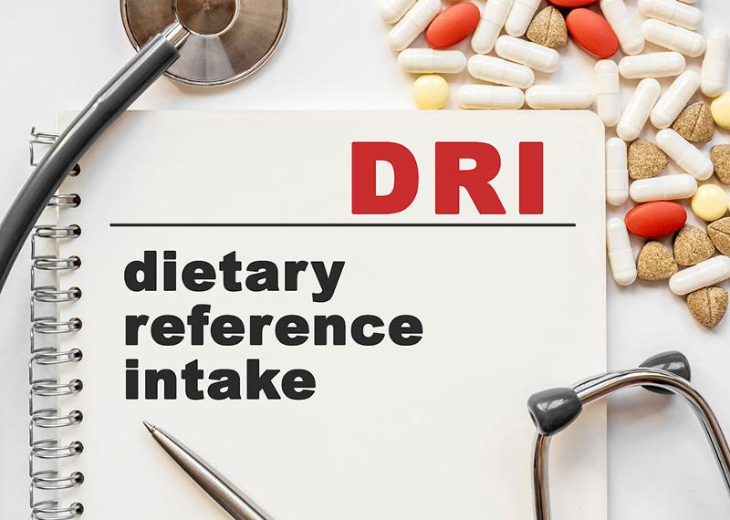
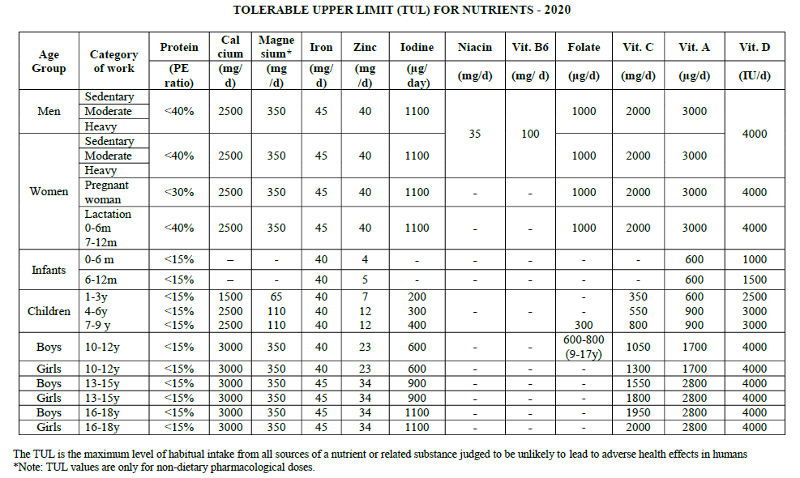

Unit Learning Objectives:
- 1.4.2 Define major principles of the national nutrition guidelines (DRI, MyPlate, Dietary Guidelines).
- 1.4.3 Identify how the national nutrition guidelines are used to make recommendations and guide individuals toward health.

Scientists continually study and evaluate nutrients to develop guidelines for human intake. DRI is the general term for a set of reference values used to plan and assess the nutrient intakes of healthy people. These values, which vary by age and gender, include:- Recommended Dietary Allowance (RDA): average daily intake level sufficient to meet the nutrient requirements of nearly all (97%-98%) healthy people in a population group. The RDA's are used to help guide individuals to achieve adequate nutrient intake.
- Adequate Intake (AI): established when evidence is insufficient to develop an RDA and is set at a level assumed to ensure nutritional adequacy.
- Estimated Average Requirements EAR): the amount of a nutrient that meets 50% of healthy individuals' needs. This value is primarily used in research.
- Tolerable Upper Intake Level (UL): maximum daily intake unlikely to cause adverse health effects. This is primarily used to prevent toxicities when taking supplements.
Applying the DRI to food Intakes
The RDA and AI provide recommended amounts for individual nutrient needs. The goal for each person is to consume 100% or more of the RDA/AI for each nutrient. In a healthy individual, exceeding 100% is good except for sodium, saturated fat, and cholesterol.
The RDA for a nutrient should be considered the minimum amount of a nutrient to consume daily or a daily goal for intake. Does that mean you will develop deficiency symptoms or disease if you don't meet the RDA for a nutrient? Most likely not. You would be unlikely to develop deficiency symptoms of a nutrient unless you had a consistently low intake over long periods. If you evaluate your nutrient intakes for a day, you will likely see that you are not meeting some of the RDA's. Low intakes would be less of a concern for fat-soluble vitamins since they can be stored in the body. The RDAs vary for different population groups. Infants and children have their own RDAs for many nutrients, as do pregnant and lactating women. Some nutrient RDAs may be different for men than for women.
Excess amounts are only reached when someone exceeds the Tolerable Upper Intake Level (UL) limits. The UL should be considered the maximum amount to consume daily. You would not likely exceed the UL from dietary intake for most vitamins and minerals, except sodium. The UL's become more of a concern with supplement use. Before taking any dietary supplement, make sure to research the UL and not exceed that amount. Not all nutrients have an upper limit, and those vitamins/minerals without an upper limit have not shown toxic effects in large doses.
